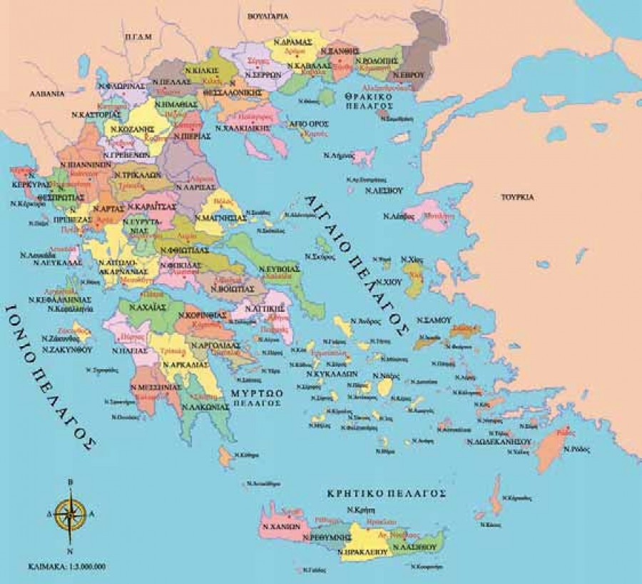

Ήρθε η ώρα των διακοπών και δεν έχεις βρει ακόμα σε ποιο μέρος θα πας; Βρες εδώ τα 7 καλύτερα μέρη της Ελλάδας που όλοι πρέπει να επισκεφτούμε. Θα βρεις μέρη κατάλληλα για όλες τις εποχές του χρόνου. Η Ελλάδα είναι μια χώρα με μοναδιθκά νησιά που σπάνια κάποιος μπορεί να βρει.Η Ελλάδα κατέχει την 11η θέση στις χώρες με τη μεγαλύτερη ακτογραμμή στα 13.676 χιλιόμετρα, καθώς έχει πλήθος νησιών που υπολογίζεται, αναλόγως τα κριτήρια, στα 2.500 με τα 165–227 να κατοικούνται. Βρίσκεται στην 97η θέση στην κατάταξη των χωρών του κόσμου σύμφωνα με την έκτασή τους και, σύμφωνα με τις επίσημες εκτιμήσεις των Ηνωμένων Εθνών το 2015, ο πληθυσμός της χώρας αριθμεί 10.955.000 κατοίκους. Πρωτεύουσα και μεγαλύτερη πόλη της είναι η Αθήνα.
